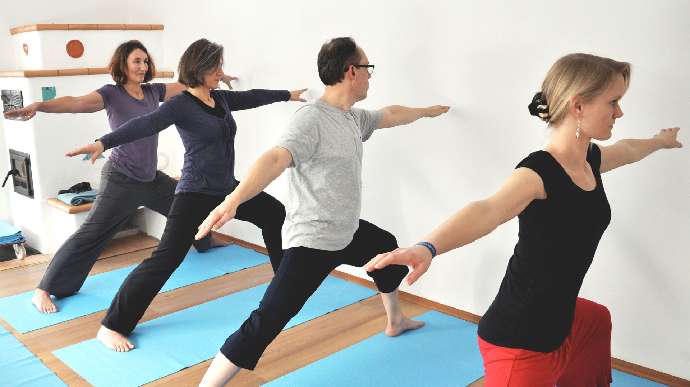

<main id="kurse">

<article class="full_width">

<h1>Kurse</h1>



<p>Die Kurse dauern 75 Minuten.</p>

<div class="half_width float_left">
<h3>Montag</h3>
08:45 – 10:00 in <a href="https://www.google.com/maps/place/Ludwig-Thoma-Stra%C3%9Fe+12,+85521+Ottobrunn,+Deutschland/@48.06685,11.6766,16z/data=!4m2!3m1!1s0x479de0e1d2c365eb:0xb286f79f6c3085d4?hl=de-DE" target="_blank">Ottobrunn</a> mit Irene<br>
10:15 – 11:30 in <a href="https://www.google.com/maps/place/Ludwig-Thoma-Stra%C3%9Fe+12,+85521+Ottobrunn,+Deutschland/@48.06685,11.6766,16z/data=!4m2!3m1!1s0x479de0e1d2c365eb:0xb286f79f6c3085d4?hl=de-DE" target="_blank">Ottobrunn</a> mit Irene<br>
17:15 – 18:30 in <a href="https://www.google.com/maps/place/Kasperlm%C3%BChlstra%C3%9Fe+6,+81739+M%C3%BCnchen,+Deutschland/@48.09546,11.6481,16z/data=!4m2!3m1!1s0x479de07ae97673ad:0x40496a5c8e98a051?hl=de-DE" target="_blank">München-Perlach</a> mit Irene<br>
18:45 – 20:00 in <a href="https://www.google.com/maps/place/Kasperlm%C3%BChlstra%C3%9Fe+6,+81739+M%C3%BCnchen,+Deutschland/@48.09546,11.6481,16z/data=!4m2!3m1!1s0x479de07ae97673ad:0x40496a5c8e98a051?hl=de-DE" target="_blank">München-Perlach</a> mit Irene
</div>

<div class="half_width float_right">
<h3>Dienstag</h3>
08:00 – 09:00 in <a href="https://www.google.com/maps/place/Kasperlm%C3%BChlstra%C3%9Fe+6,+81739+M%C3%BCnchen,+Deutschland/@48.09546,11.6481,16z/data=!4m2!3m1!1s0x479de07ae97673ad:0x40496a5c8e98a051?hl=de-DE" target="_blank">München-Perlach</a> mit Irene<br>
09:15 – 10:30 in <a href="https://www.google.com/maps/place/Kasperlm%C3%BChlstra%C3%9Fe+6,+81739+M%C3%BCnchen,+Deutschland/@48.09546,11.6481,16z/data=!4m2!3m1!1s0x479de07ae97673ad:0x40496a5c8e98a051?hl=de-DE" target="_blank">München-Perlach</a> mit Irene<br>
20:00 – 21:15 in <a href="https://www.google.com/maps/place/Metzstra%C3%9Fe+19,+81667+M%C3%BCnchen,+Deutschland/@48.130273,11.598523,16z/data=!4m2!3m1!1s0x479ddf8029cbf689:0xf564b0fd5ddef52e?hl=de-DE" target="_blank">München-Haidhausen</a> mit Dietmar
</div>

<div class="clear"></div>

<div class="half_width float_left">
<h3>Donnerstag</h3>
16:00 – 17:15 in <a href="https://www.google.com/maps/place/Kasperlm%C3%BChlstra%C3%9Fe+6,+81739+M%C3%BCnchen,+Deutschland/@48.09546,11.6481,16z/data=!4m2!3m1!1s0x479de07ae97673ad:0x40496a5c8e98a051?hl=de-DE" target="_blank">München-Perlach</a> mit Irene<br>
17:30 – 18:45 in <a href="https://www.google.com/maps/place/Kasperlm%C3%BChlstra%C3%9Fe+6,+81739+M%C3%BCnchen,+Deutschland/@48.09546,11.6481,16z/data=!4m2!3m1!1s0x479de07ae97673ad:0x40496a5c8e98a051?hl=de-DE" target="_blank">München-Perlach</a> mit Irene<br>
19:00 – 20:15 in <a href="https://www.google.com/maps/place/Kasperlm%C3%BChlstra%C3%9Fe+6,+81739+M%C3%BCnchen,+Deutschland/@48.09546,11.6481,16z/data=!4m2!3m1!1s0x479de07ae97673ad:0x40496a5c8e98a051?hl=de-DE" target="_blank">München-Perlach</a> mit Irene
</div>

<div class="half_width float_right">
<h3>Freitag</h3>
15:15 – 16:30 in <a href="https://www.google.com/maps/place/Kasperlm%C3%BChlstra%C3%9Fe+6,+81739+M%C3%BCnchen,+Deutschland/@48.09546,11.6481,16z/data=!4m2!3m1!1s0x479de07ae97673ad:0x40496a5c8e98a051?hl=de-DE" target="_blank">München-Perlach</a> mit Irene
</div>

<div class="clear"></div>

<p>&nbsp;</p>

<h2>Anfahrt</h2>

<p name="perlach">

<h4>München-Perlach</h4>
Kasperlmühlstraße 6

<div class="freeze-overlay" onClick="style.pointerEvents='none'"></div>
<iframe src="https://www.google.com/maps/embed?pb=!1m18!1m12!1m3!1d2664.7658460304256!2d11.6481003!3d48.0954604!2m3!1f0!2f0!3f0!3m2!1i1024!2i768!4f13.1!3m3!1m2!1s0x479de07ae97673ad%3A0x40496a5c8e98a051!2zS2FzcGVybG3DvGhsc3RyYcOfZSA2LCA4MTczOSBNw7xuY2hlbg!5e0!3m2!1sde!2sde!4v1441114671472" width="100%" height="400" frameborder="0" style="border:0" allowfullscreen></iframe>

</p>
<p>&nbsp;</p>
<p name="ottobrunn">

<h4>Ottobrunn</h4>
Ludwig-Thoma-Straße 12 (im <a href="http://schwungrad.net">Schwungrad</a>)

<div class="freeze-overlay" onClick="style.pointerEvents='none'"></div>
<iframe src="https://www.google.com/maps/embed?pb=!1m18!1m12!1m3!1d2666.2482991305933!2d11.676599999999999!3d48.066849999999995!2m3!1f0!2f0!3f0!3m2!1i1024!2i768!4f13.1!3m3!1m2!1s0x479de0e1ce7dc063%3A0xd674fdbc3afda6be!2sLudwig-Thoma-Stra%C3%9Fe+12%2C+85521+Ottobrunn!5e0!3m2!1sde!2sde!4v1441114428811" width="100%" height="400" frameborder="0" style="border:0" allowfullscreen></iframe>

</p>
<p>&nbsp;</p>
<p name="haidhausen">

<h4>München-Haidhausen</h4>
Metzstraße 19

<div class="freeze-overlay" onClick="style.pointerEvents='none'"></div>
<iframe src="https://www.google.com/maps/embed?pb=!1m18!1m12!1m3!1d2662.9611339045346!2d11.598523300000002!3d48.1302729!2m3!1f0!2f0!3f0!3m2!1i1024!2i768!4f13.1!3m3!1m2!1s0x479ddf8029cbf689%3A0xf564b0fd5ddef52e!2sMetzstra%C3%9Fe+19%2C+81667+M%C3%BCnchen!5e0!3m2!1sde!2sde!4v1441114876241" width="100%" height="400" frameborder="0" style="border:0" allowfullscreen></iframe>

</p>
</article>

</main>
